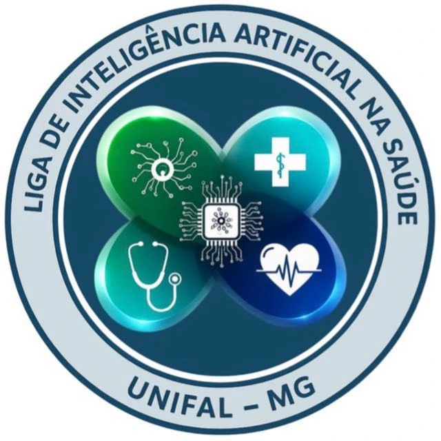

<section class="lias-section section-shell" aria-labelledby="lias-title">
  <div class="container gepec-layout lias-layout">
    <div class="gepec-copy">
      <span class="eyebrow">Liga acadêmica</span>
      <h2 id="lias-title">LIAS</h2>
      <p class="gepec-fullname">Liga de Inteligência Artificial na Saúde, UNIFAL-MG</p>
      <!-- EDITAR TEXTO: descrição, coordenação e contato da LIAS -->
      <p>A LIAS aproxima estudantes da UNIFAL-MG do uso da inteligência artificial na saúde, com atividades de ensino, pesquisa e extensão realizadas em parceria com o SisAPEC.</p>

      <!-- EDITAR EVENTO: atualize com o evento mais recente da LIAS com o SisAPEC -->
      <article class="lias-event">
        <span class="lias-event-label">Último evento com o SisAPEC</span>
        <strong>Minicurso: Engenharia de Produtividade e Pesquisa Científica Assistidas por Inteligência Artificial</strong>
      </article>
    </div>
    <figure class="gepec-logo lias-logo">
      
    </figure>
  </div>
</section>
